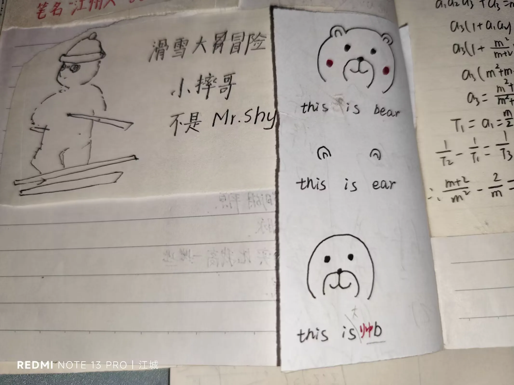

Journal · 2024-09-19
湖北省武汉市
我在历史的故纸堆中，发现了一个小纸条。 画得还挺可爱！
Rummaging through the yellowed pages of history, I came upon a little scrap of paper. It's actually drawn rather sweetly!
En fouillant dans les vieilles paperasses de l'histoire, j'ai déniché un petit bout de papier. C'est même dessiné assez mignonnement !
In den vergilbten Akten der Geschichte stieß ich auf einen kleinen Zettel. Der ist sogar ganz niedlich gezeichnet!

在 : 我画的 2024年9月20日 09:29 柴江赣北 回复在 : I'm a B … 2024年9月20日 09:38 柴江赣北 :
在 : I drew it 2024年9月20日 09:29 柴江赣北 回复在 : I'm a B … 2024年9月20日 09:38 柴江赣北 :
在 : C'est moi qui l'ai dessiné 2024年9月20日 09:29 柴江赣北 回复在 : I'm a B … 2024年9月20日 09:38 柴江赣北 :
在 : Ich habe das gezeichnet 2024年9月20日 09:29 柴江赣北 回复在 : I'm a B … 2024年9月20日 09:38 柴江赣北 :
2024年9月20日 09:41
2024年9月20日 09:41
2024年9月20日 09:41
2024年9月20日 09:41